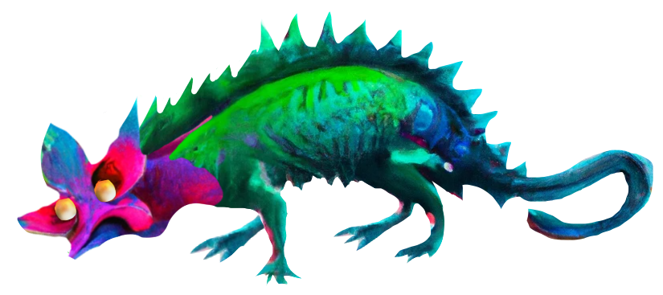

Will you come on a tiny quest with me?
We'll explore connection, and how we make art
with our communities through three questions. In the end, you'll find your artist engagement archetype


My name is Marie. I make playful art about the spaces between people: how we reach each other
What's your name?
We are all looking for connection. It’s the first hunger
~
I find connection very difficult. I’ve always felt other, strange. I want to feel close to people. But I'm always getting lost in the spaces between other people and myself
Art is the closest I’ve come to feeling that we might understand each
other. Like we might actually touch
Do you feel more connected to people through making art?
Still, you know when people are truly, deeply touched in the guts by your art. Or when they aren't. Like how you know when you are touched by someone that loves you
Connection is crucial. So I search for my people. I scavenge and invent creative ways to share my art. I make mistakes, fumbling through social codes. I continue reaching out, even when met with blank stares. I try something new, somewhere new, someone new. Do you?
I was never good at games. I mashed buttons in the local arcade,
feeling bad if anyone lost. When I started making games, people didn’t think they were fun. People didn’t stay
long enough to experience what I was trying to say. So I introduced points, death, and a timer. I added the
things I hated and people started liking them. I dream of making something unfiltered, and unmediated -- but
understood.
It’s hard to know when to listen to people. When to stop listening.
Will you delightedly translate your work to be understood? yes or no?
I make music alone in my room. Sometimes it sounds so bad my hair
stands on end. Sometimes it shimmers with beauty. But when I make music for other people I wonder: Do you like
these sounds? I stop exploring. I only make sounds I’ve made before, sounds I think you’ll like.
It's
easy to lose our way making art like this. We go through the motions of art, but the core becomes hollow and
flat.
Is public art a dialogue? Are you in conversation with other people? yes or no?
I make art because it would be impossible to stop. But I could make
art privately. I make public art out of a deep desire to understand and be understood. I find connection
terrifying, so it’s humbling to have a practice where I need other people to bring it to life.
My work
is often participatory. There are so many names on the thank you list that it is longer than the project
description. I invite people in.
I fumble through the poetics of connection. I ask friends to test
my early work. I listen to the people who show up. They say conflicting things. I wish they could see what I
see, hear what I hear. I try not to defend myself, to explain that it's not my fault, there's never enough
money or time.
The hardest part of playtesting is listening, really .
Do you take your audience by the hand and pull them in? yes or no?

find your way,
seeker?
This project was created on the unceded territories of the Kanien’kehá:ka (Tiohtià:ke), and Mi’kmaq (K’jipuktuk) nations.
Design & Code: Marie Claire LeBlanc Flanagan
Special thanks to Nneka and Ida.